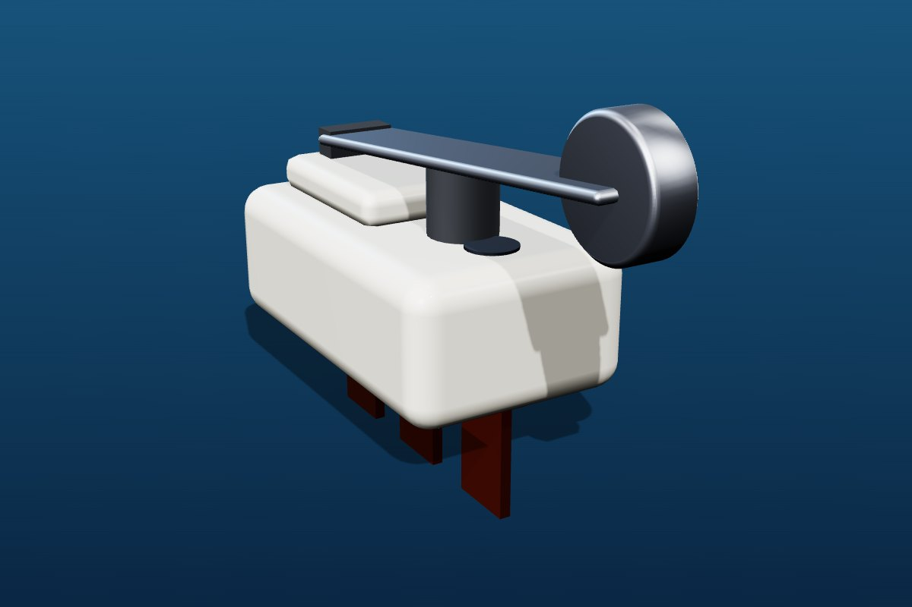

Micro switches
with a crisp snap.
Small, fast and repeatable. A stamped contact and spring system gives the characteristic snap action over a very small travel, ready to be built into appliances, machines and OEM assemblies.
Specifications shown are design targets, not guaranteed ratings. Electrical ratings, life data, ingress protection and standards compliance are confirmed per variant after validation. Please ask before design-in.

Sensing · Snap-action
Micro Switches
| Contact form | SPDT (COM / NO / NC) |
|---|---|
| Actuators | Pin plunger, hinge lever, roller lever |
| Mechanism | Snap-action, stamped contact and spring |
| Termination | Solder, quick-connect or PCB pins |
| Mounting | Two-hole screw mount |
| Rating | Defined per variant after validation |
| Design reference | IEC 61058-1 / IEC 60947-5-1 |
Features
Designed for the shop floor
- Precise operating point and low operating force
- Lever styles for different travel and force needs
- Easily built into OEM assemblies
- Contact geometry matched to the load
Typical applications
Where it is used
AppliancesDoor and lid detectionMachine feedbackVending and ATMs
Need a different actuator, terminal, colour or mounting? See custom switches.
Enquire about micro switches
Share load, voltage, operating force, mounting, expected volume and target date.